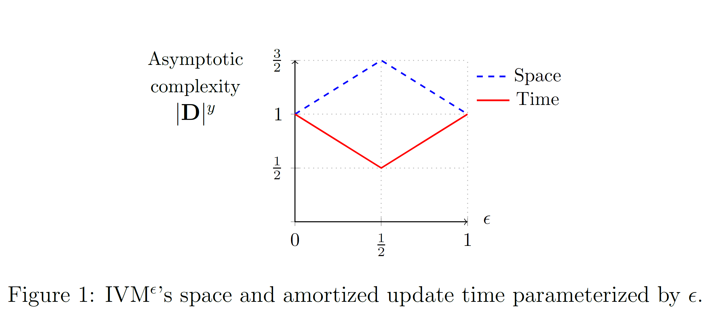
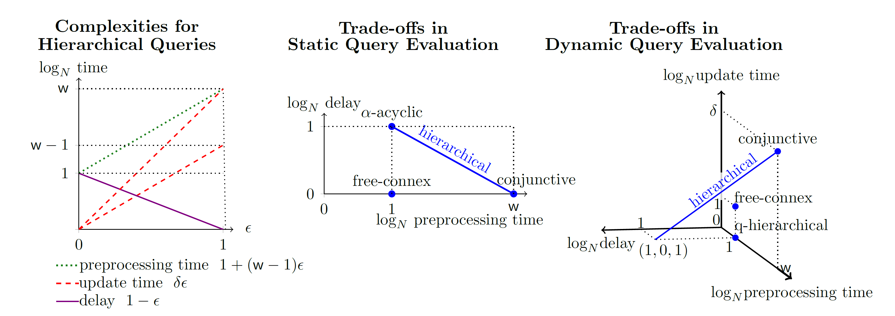

The Complexity of Incremental View Maintenance
We investigate trade-offs in static and dynamic evaluation of queries. In the static setting, the trade-off is between the time to partially compute the query result and the delay needed to enumerate its tuples. In the dynamic setting, we additionally consider the time needed to update the query result under single-tuple inserts or deletes to the database.
The core idea is adaptive query processing: We partition the databases according to the frequencies or the degrees of data values, and then use different processing strategies to low-frequency (light) and high-frequency (heavy) data. We have studied the application of this idea to some popular queries, and published a series of papers.
Triangle Queries
Let us consider the maintenance of the count of triangles: $$Q() = \sum_{A,B,C} R(A,B) \cdot S(B,C) \cdot T(C,A)$$ under single-tuple updates to the input relations R, S, and T. The relations are given as functions mapping tuples to their multiplicities. A single-tuple update is a relation mapping a tuple to a non-zero value (positive for inserts and negative for deletes).
Our algorithm IVM$^{\epsilon}$ uses an adaptive strategy to maintain the triangle count query $Q$ in $O({|D|^{\max{\{\epsilon, 1-\epsilon\}}}})$ amortized time while using $O({|D|^{1+\min{\{\epsilon, 1-\epsilon\}}}})$ space where $\epsilon \in [0,1]$ as shown in Figure 1 below (see ICDT'19).
IVM$^{\epsilon}$ defines a continuum of approaches exhibiting a tradeoff between space and time based on $\epsilon$ such that the existing approaches (classical first-order and factorized IVM) are extreme points in this continuum. By setting $\epsilon = 0.5$, IVM$^{\epsilon}$ achieves its best update time $O({|D|^{0.5}})$, and we proved that this update time is worst-case optimal under the Online Matrix-Vector Multiplication (OMv) conjecture. The extended paper shows the application of IVM$^{\epsilon}$ to other count queries including Lommis-Whitney, 4-path queries, and any query with three relations. IVM$^{\epsilon}$ achieves sublinear update time for all of them.
This idea can be generalized to extensions of the triangle count query above (see TODS'20).
Hierarchical Queries
We extended IVM$^{\epsilon}$ to hierarchical queries (see PODS'20). The figure below shows our results precisely.
The left figure shows the preprocessing time, enumeration delay, and amortized update time for a hierarchical query with static with $\mathsf{w}$ and dynamic width $\delta$ ($\delta$ can be $\mathsf{w}$ or $\mathsf{w} - 1$, hence the two red lines for the update time). The middle and right figure show the trade-offs in static and dynamic evaluation: Given a hierarchical query with static width $\mathsf{w}$, delta width $\delta$, a database of size $|D|$, and $\epsilon \in [0,1]$, the query result can be enumerated with $O(|D|^{1-\epsilon})$ delay after $O(|D|^{1 + (\mathsf{w} -1)\epsilon})$ preprocessing time, and $O(|D|^{\delta \epsilon})$ amortized update time for single-tuple updates in the dynamic case. Our approach achieves each blue point and each point on the blue lines. Prior approaches are represented by one point in the trade-off space.
Our PODS'20 paper has four main contributions:
- Recovery of prior approaches: Our results recover prior results restricted to hierarchical queries by setting $\epsilon$ properly (read more).
- Sublinear update time and delay: Our approach is the first one that allows sublinear amortized update time and sublinear enumeration delay for hierarchical queries.
- Optimality for hierarchical queries with delta width 1.
- We show the gap between single-tuple and bulk tuple updates.
Useful Links
Publications
-
Maintaining Triangle Queries under Updates
.
[
arxiv
]
Journal
Ahmet Kara, Hung Q. Ngo, Milos Nikolic, Dan Olteanu, Haozhe Zhang.
To appear in ACM Transactions on Database Systems (TODS), 2020 (accepted April 2020)
Special issue of best papers at ICDT 2019
arXiv report 2004.03716 , April 2020.
-
Trade-offs in Static and Dynamic Evaluation of Hierarchical Queries
.
[
arxiv
,
slides
,
video
]
Conference
Ahmet Kara, Milos Nikolic, Dan Olteanu, Haozhe Zhang.
In ACM Principles of Database Systems (PODS), Portland, Oregon, June, 2020.
arXiv report 1907.01988 , July 2019.
-
Counting Triangles under Updates in Worst-Case Optimal Time
.
[
accepted version
,
arxiv
,
slides
]
Conference
Best Paper Award
Ahmet Kara, Hung Ngo, Milos Nikolic, Dan Olteanu, and Haozhe Zhang.
In Int Conf on Database Theory (ICDT), Lisbon, March 2019.
Extended version in arXiv report 1804.02780 , April 2018.